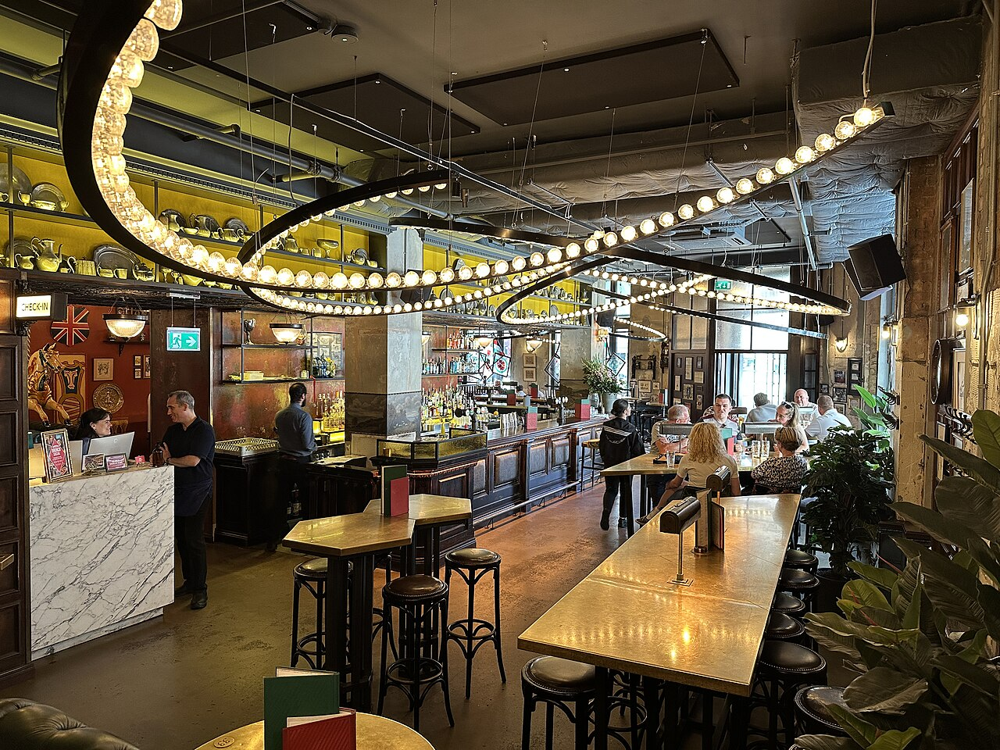
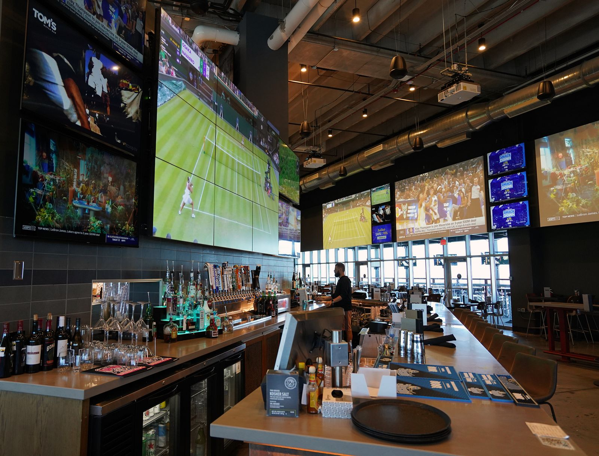
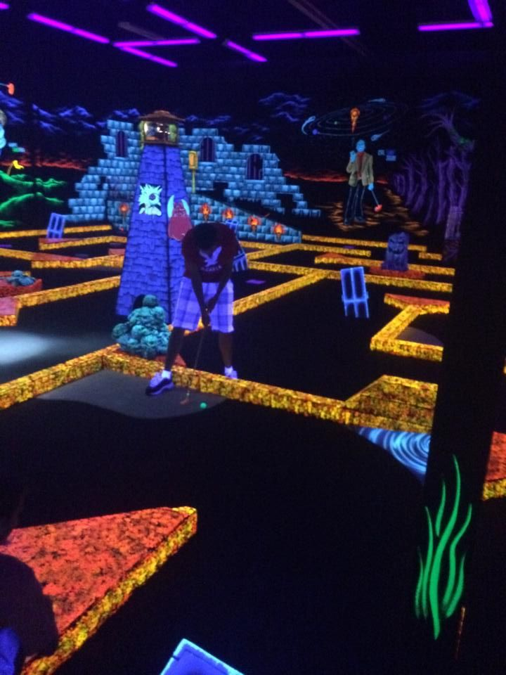
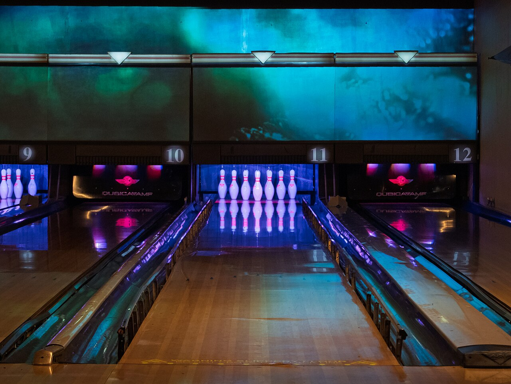
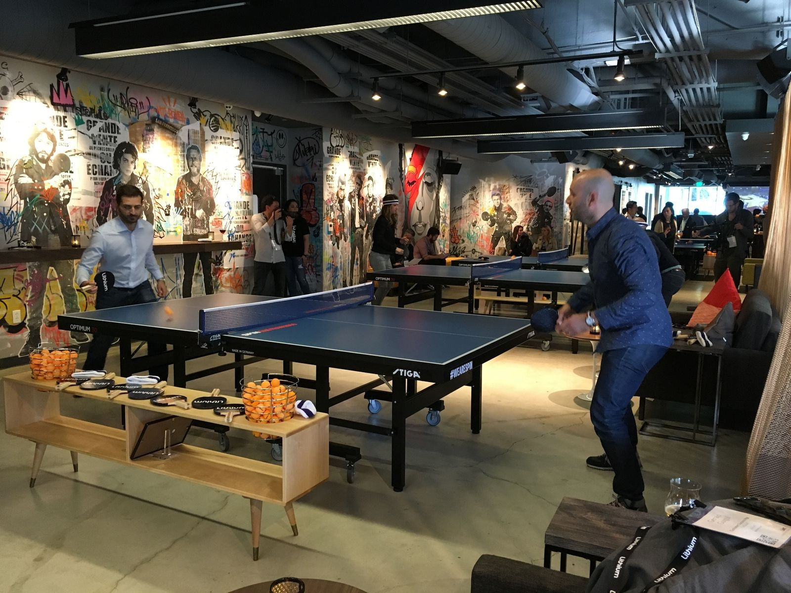

What are the best activity bars in London for a group of friends?

The short answer
The best activity bar for a group of friends depends on the vibe. Flight Club, Electric Shuffle and Toca Social suit a competitive night, Boulebar and Swingers suit something more relaxed, Boom Battle Bar suits a lively night with lots of games, NQ64 suits retro gaming, and Rowans and Bounce suit a cheaper night. Check the minimum group size, the age rules and your total per head before you book.
The best activity bars for a group of friends at a glance
| Activity | Venue | Price per person | Group size | The vibe |
|---|---|---|---|---|
| Social darts | Flight Club, Shoreditch | £10 to £1760 or 90 minutes | At least 4 to 6 at peak times | Competitive |
| Shuffleboard | Electric Shuffle, London Bridge | £10 to £1760 or 90 minutes | 6 to 16 per board | Competitive |
| Football | Toca Social, The O2 | £10 to £2345 minutes or more | 2 to 12 per game box; 24 online | Competitive |
| Games bar | Boom Battle Bar, Liverpool Street | £27.50one game, two drinks and food | Not confirmed | Loud, with lots of games |
| Pétanque | Boulebar, South Bank | From £1090 minutes on a court | 2 to 6 per court | Relaxed |
| Crazy golf | Swingers, West End | £12 to £59golf alone to Party Set | Up to 24 online | Relaxed, good for birthdays |
| Retro arcade | NQ64, Soho | Free entrytokens from £10.50 | Walk-in, no limit published | Retro, late |
| Bowling | Rowans, Finsbury Park | £8.60 to £10.80per game, plus £1 or £5 admission | Not confirmed; 24 lanes | Cheap and cheerful |
| Ping pong | Bounce, Battersea | £6 to £1025 or 55 minutes | Up to 16 per table | Active and social |
Prices are per person, from the cheapest to the dearest standard rate, and were last checked in August and September 2026. Group sizes are what each venue’s own booking flow takes, and “not confirmed” means we have not found a published figure.

Photograph by Matt Brown, via Wikimedia Commons, CC BY 2.0.
Flight Club, Shoreditch
From £10per person, up to £17, for 60 or 90 minutes of social darts
Flight Club is social darts. Your group gets its own throwing area with a board, a screen and automatic scoring, and plays short arcade-style games rather than a standard match, so nobody needs to know the rules of darts. Food and drink are brought to the throwing area, covering wings, tacos, sliders, sticks, a sharing platter and pizzas, with 0% beers, mocktails and 0% spirits alongside the full bar, and every booking gets a personal highlight reel of its best throws afterwards.
Why it works for friends
Venue pages

Canary Wharf site, shown for the table and gameplay. Photograph by Matt Brown, via Wikimedia Commons, CC BY 4.0.
Electric Shuffle, London Bridge
From £10per person, up to £17, for 60 or 90 minutes
Electric Shuffle is shuffleboard where the table does the work: you slide weighted pucks down a long board, and a projection system runs the games, scores every shot and keeps the leaderboard. Food and drink are ordered through a call button on the scoreboard and brought to the table, with sourdough pizzas as the standout alongside cocktails, burgers and small plates. Weekend brunch is bottomless, with two hours of pizza and Prosecco or beer, an hour of shuffleboard and live DJs.
Why it works for friends
Venue pages

Photo of interactive football, not this specific venue. Photo: Jongeek77 / Wikimedia Commons, CC BY 4.0.
Toca Social, The O2
From £10per person, up to £23, for a private game box session
Toca Social is interactive football. Your group plays in a private game box, an enclosed bay with its own screen, where a machine serves real footballs and you aim at targets while the games score themselves. Beginner modes mean that someone who has never played can still score, and the harder settings give stronger players something to aim at. Food is brought to the box while you play, with wings, tenders, birria tacos and burgers on the menu, alongside a full cocktail list and low-alcohol and alcohol-free options, and the venue has foosball tables, arcade machines and photo booths for afterwards.
Why it works for friends
Venue pages
Boom Battle Bar, Liverpool Street
£27.50per person for a BOOM Bundle of one game, two drinks and food
Boom Battle Bar is a games bar with seven activities under one roof: axe throwing, augmented-reality darts, crazier golf, shuffleboard, American pool, beer pong and karaoke booths. Every booking is a bundle of one full-length game (55 minutes for most games and 30 for axe throwing), two premium drinks, and either two street food plates or a burger per person. The Liverpool Street site is on Chaucer Gardens, closer to Aldgate East station than to Liverpool Street itself.
Why it works for friends
Venue pages
Boulebar, South Bank
From £10per person for 90 minutes on a court
Boulebar is a French-style bar built around pétanque, a game where you throw metal balls (boules) as close as you can to a small target ball. You book a court for 90 minutes with all the equipment included, and you play with a drink in hand. South Bank has 20 courts, 18 of them outdoors behind the National Theatre, with covered courts in winter, and the kitchen serves French classics and sharing charcuterie boards alongside French beers, ciders and cocktails.
Why it works for friends
Venue pages

Photo of crazy golf, not this specific venue. Photo: TMBLover / Wikimedia Commons, CC BY-SA 4.0.
Swingers, West End
From £12per person for golf, rising to £59 for the Party Set package
Swingers is a nine-hole crazy golf course styled as a 1920s English seaside resort, a minute’s walk from Oxford Circus. A round takes 30 to 40 minutes at busy times, and next to the course is Carnival, a retro arcade with more than 30 games. Four cocktail bars and a rotating line-up of street-food traders, including Pizza Pilgrims, Patty & Bun and Breddos Tacos, mean you can eat and drink as you play, with vegetarian, vegan, gluten-free and halal options available.
Why it works for friends
Venue page
NQ64, Soho
Free entrymost of the week, with tokens from £10.50 for 15
NQ64 is a retro arcade bar with more than 60 arcade cabinets across two floors at Orange Yard, plus pool tables, interactive dartboards and retro consoles that are free to play. The cabinets run on tokens, which cost £10.50 for 15 or £14 for 25, and most take one or two tokens a play. Soho is NQ64’s biggest site, opened in September 2026, and it is a cocktail bar first, with a drinks list built around the games.
Why it works for friends
Venue pages

Photograph by Tom Page, via Wikimedia Commons, CC BY-SA 2.0.
Rowans, Finsbury Park
From £8.60per person per game, up to £10.80, plus a £1 or £5 admission fee
Rowans is a bowling alley in Finsbury Park with 24 lanes across two floors, and the same building has karaoke booths, pool tables, a bar and a dance floor for later in the evening. Two games is a typical night and takes roughly 45 minutes for a normal-sized group. The food covers burgers, hot dogs, fish fingers and chicken goujons, and the bar has draught and bottled beer, wines, spirits, frozen cocktails and soft drinks.
Why it works for friends
Venue page

Photo: Jeff Terrell / Wikimedia Commons, CC BY 2.0.
Bounce, Battersea
From £6per person for 25 minutes, up to £10 for 55 minutes of Ping Pong X
Bounce is a ping pong bar with 17 tables split between classic ping pong, Ping Pong X (tables with AI tracking and automatic scoring) and beer pong. Battersea is set inside Turbine Hall B of Battersea Power Station, with a bar, a kitchen and resident DJs, and Games Gurus can be added to host your session with extra games and competitive rounds. Food covers pizzas and a broader diner-style menu alongside a full cocktail bar, and the Ace and Champion packages include unlimited pizza for up to two hours.
Why it works for friends
Venue page
How do you choose an activity bar for a group of friends?
Start with the kind of night you want
Agree the vibe before you look at venues, because it narrows the list faster than price or location. A competitive night, a relaxed one and a loud one point to different places.
Competitive
Flight Club, Electric Shuffle and Toca SocialEach runs scored games with a leaderboard.Relaxed
Boulebar and SwingersPétanque with a drink, or crazy golf with street food.Loud, with lots of games
Boom Battle BarSeven games, with drinks and food in the bundle.Retro and late
NQ64Walk-in arcade, open until 3am on Friday and Saturday.Cheap and cheerful
Rowans and BounceBowling from £8.60 a game, ping pong from £6.Birthdays
Swingers and Electric ShuffleSwingers’ Party Set, or Electric Shuffle’s weekend brunch.Then think about how many of you there are
2 to 4 people
Boulebar, NQ64 and Toca SocialBoulebar courts take 2 to 6, and NQ64 is walk-in.5 to 8 people
Flight Club, Toca Social and BoulebarFlight Club needs at least six at most peak times.9 to 16 people
Electric Shuffle, Bounce and Toca SocialUp to 16 share a board or a table, and up to 24 book Toca Social online.17 or more
Electric Shuffle and SwingersElectric Shuffle takes up to 32, and Swingers takes up to 24 online.Think about whether people can talk
We have not measured noise levels, so we cannot give you a decibel figure. Our ratings describe Boom Battle Bar as rowdy, and reviewers describe weekday afternoons and early evenings as calmer than weekend nights at most activity bars.
How much does a night out at an activity bar cost per head?
The price on a booking page is usually only the game, and drinks, food and travel come on top. The table shows the activity price, what else you pay, and a rough total where the venue’s published prices let us work one out.
| Venue | Activity price | What else you pay | Rough total per person |
|---|---|---|---|
| Rowans, Finsbury Park | £8.60 to £10.80per game | £1 or £5 admission on top; shoe hire is included | £10.70 to £26.60one game on a Thursday evening to two on a Friday evening |
| Boom Battle Bar, Liverpool Street | £27.50BOOM Bundle | One game, two drinks and food are included | £27.50as published |
| Flight Club, Shoreditch | £10 to £1760 or 90 minutes | Beers from £6.70, wines from £6.80, food extra | About £30an hour at peak with two pints and a share of two sides |
| Swingers, West End | £12 to £59golf alone to Party Set | Twin Set includes a £20 drink credit, Party Set a £45 food and drink credit | £35 to £59for the two packages that include credit |
| NQ64, Soho | Free entrytokens from £10.50 | Cocktails extra; consoles are free | Not worked outdrinks prices not sampled |
| Boulebar, South Bank | From £1090 minutes on a court | Food and drink extra | Not worked outfood and drink prices not sampled |
| Bounce, Battersea | £6 to £1025 or 55 minutes | Food and drink extra; Ace and Champion packages include unlimited pizza | Not worked outpackage prices not published |
| Electric Shuffle, London Bridge | £10 to £1760 or 90 minutes | Food and drink extra, ordered to the table | Not worked outfood and drink prices not sampled |
| Toca Social, The O2 | £10 to £2345 minutes or more | Food and drink extra, ordered to the game box | Not worked outfood and drink prices not sampled |
Totals are our arithmetic from published prices, not quotes, and exclude any service charge and travel. Rowans’ range runs from one game on a Thursday evening (£9.70 plus £1 admission) to two games on a Friday evening.
Which venues fit which budget?
Activity under £15
Rowans, Bounce, Boulebar and NQ64Bowling from £8.60 a game, ping pong from £6, pétanque from £10 and arcade tokens from £10.50, before drinks.About £25 to £40 all in
Boom Battle Bar, Flight Club and SwingersThe £27.50 Boom bundle, about £30 at Flight Club, and £35 for Swingers’ Twin Set.£40 to £60 all in
Swingers Party Set£59 each with a food and drink credit and a reserved area.Depends on the order
Toca Social and Electric Shuffle£10 to £23 and £10 to £17 for the game, with food and drink on top.How do you plan a whole night out around an activity bar?
Pick one main activity and a second stop
Most of these venues take 45 minutes to two hours, so the activity is rarely the whole night. Toca Social has foosball tables, arcade machines and photo booths in the same venue, Rowans has karaoke, pool and a dance floor in the same building, and Swingers has the Carnival arcade next to the course. NQ64 is open until 3am on Friday and Saturday, so it works as a later second stop after an earlier activity.
Decide when you will eat
Flight Club, Electric Shuffle and Toca Social bring food to your table while you play. Swingers has street-food traders on site, Boulebar serves French classics and charcuterie boards, and Rowans has simple bar food. We have not confirmed whether NQ64 serves food, so eat beforehand if you are heading there.
Plan the journey home
Check the last train before you book a late slot. The Jubilee line runs all night on Fridays and Saturdays, which covers Toca Social at The O2. Boulebar closes at 11pm on weekdays and Saturdays and at 6pm on Sundays, so it suits an earlier start.
What are the best tips for booking with friends?
Nominate one person to book and collect the money
One booker keeps the group count and the payment in one place. Bounce takes full payment when you book, Swingers tickets are non-refundable, and Boom Battle Bar bookings are non-refundable, so collect the money before you pay rather than after.
Agree the budget first
Prices are quoted per person, so a no-show still leaves a gap in the bill. Agree the budget and who covers a drop-out before you book, and use the cost table above to check that the total fits.
Check the minimum group size
Flight Club needs at least four guests from 4pm on Monday and Tuesday and at least six at most other peak times, and Electric Shuffle needs at least six on a Saturday. Smaller groups should look at Boulebar, NQ64 or a weekday slot.
Book ahead for Friday and Saturday
Toca Social’s Saturday afternoons sell out well in advance while its weeknights rarely do, and Swingers releases tickets two months ahead. For a group of six or more on a Friday or Saturday evening, book as soon as the date is agreed.
What should you check before you book?
Age rules
Electric Shuffle is 18 and over for everyone who plays, Boom Battle Bar and Swingers are 18 and over after 7pm and 6pm respectively, Toca Social becomes 18 and over from 4pm on Fridays and Saturdays and from 7pm on other days, and Bounce is 18 and over in the evenings. Rowans is over-21s only after 7pm. We have not confirmed the age rules at Flight Club, Boulebar or NQ64, so check them if anyone under 18 is coming.
Payment
Boulebar, Swingers and Boom Battle Bar are cashless, and Rowans takes deposits by card on group bookings.
Accessibility
Toca Social at The O2 is step-free throughout, and Electric Shuffle, London Bridge is mostly step-free with one raised shuffleboard that is not wheelchair accessible. Finsbury Park station, for Rowans, is step-free. We have not confirmed access inside the other venues, so contact them before you book.
Prices and rules change. Check each venue’s own booking page before you book.
Common questions about a night out with friends
- Which activity bar is best for a birthday?
- Swingers is the one set up for it: its Party Set costs £59 per person and adds a £45 food and drink credit and a reserved area for 90 minutes. Electric Shuffle’s weekend brunch includes two hours of bottomless Prosecco or beer with pizza and an hour of shuffleboard, and Boom Battle Bar’s £27.50 bundle includes two drinks and food. We have not confirmed birthday packages at the other venues.
- Which activity bar is best for a stag or hen do?
- We have not verified stag or hen packages at any of these venues, so ask each one before you book. For a group of 10 or more, Electric Shuffle’s semi-private area takes up to 32, Swingers and Toca Social take up to 24 online, and Bounce puts up to 16 on one table. Boom Battle Bar and Rowans are both 18 and over in the evening, and Rowans is over-21s only after 7pm.
- Which activity bar is best for a big group of 10 or more?
- Electric Shuffle takes groups of 2 to 32 in a semi-private area, with up to 16 sharing one board. Swingers and Toca Social both take up to 24 online, and Bounce puts up to 16 on one table and splits larger groups across more tables. We have not confirmed group limits at Boom Battle Bar or Rowans.
- Which activity bar is best for a small group of 4?
- Boulebar takes 2 to 6 players per court, Toca Social gives groups of 4 to 6 a 60-minute session, and NQ64 is walk-in with no booking needed. Flight Club needs at least four guests from 4pm on Monday and Tuesday, but at least six from 4pm on Wednesday to Friday and all day Saturday.
- Which activity bar is best for friends on a budget?
- Rowans charges from £8.60 per person per game with a £1 admission fee Monday to Thursday, Bounce starts at £6 per person for 25 minutes, and Boulebar starts at £10 for 90 minutes on a court. NQ64 has free entry for most of the week, though tokens cost £10.50 for 15. See our guide to the cheapest activity bars in London for more.
- Which activity bar is best for friends who aren’t competitive?
- Boulebar and Swingers are the most relaxed here: Boulebar is pétanque with a drink in hand, and Swingers is crazy golf with an arcade and street food alongside. NQ64 lets people wander between arcade cabinets and free consoles without a scoreboard.
- Which activity bar is best for a first meet-up with new friends?
- A shared game with no pressure works best, so Boulebar, Swingers and NQ64 are good starting points. NQ64 is walk-in only, so nothing needs to be booked or paid for in advance.
- Which activity bar is best on a weeknight?
- Toca Social’s weeknights rarely sell out, Rowans costs less from Monday to Thursday than on Friday and Saturday, and Flight Club and Electric Shuffle cost £10 per person for an hour from Sunday to Tuesday. Boulebar is open from 3pm to 11pm on weekdays.
- Which activity bar is best on a rainy day?
- Boulebar is the only venue here with outdoor courts, 18 of its 20, and it has covered courts in winter. Every other venue in this guide is indoors.
- Which activity bars are best for friends who don’t drink?
- Flight Club serves 0% beers, mocktails and 0% spirits, Toca Social lists low-alcohol and alcohol-free options, and Rowans’ bar sells soft drinks. We have not confirmed the alcohol-free options at the other venues, so ask before you book.
- Which activity bar is best when friends have different budgets?
- NQ64 and Rowans let each person decide how much to spend: NQ64 has free entry with tokens bought individually, and Rowans charges per person per game. Swingers lets you pick between golf alone at £12 and packages up to £59, though we have not confirmed whether one group can mix packages.
- Which activity bars are best in Central London, East London or elsewhere?
- In Central London, Swingers is a minute from Oxford Circus, NQ64 is a couple of minutes from Tottenham Court Road and Boulebar is three minutes from Waterloo. In East London, Flight Club is in Shoreditch, Electric Shuffle is near London Bridge and Boom Battle Bar is five minutes from Aldgate East. Rowans is in Finsbury Park in North London, Bounce is in Battersea in the south-west and Toca Social is at The O2 in the south-east.